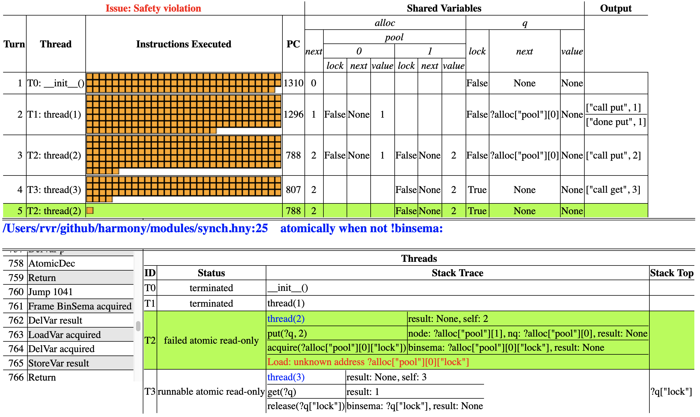

Debugging
So, you wrote a Harmony program and Harmony reports a problem. Often you may just be able to figure it out by staring at the code and going through some easy scenarios, but what if you don't? The output of Harmony can be helpful in that case.
from synch import Lock, acquire, release
from alloc import malloc, free
def Queue():
result = { .next: None, .value: None, .lock: Lock() }
def put(q, v):
let node = malloc({ .next: None, .value: v, .lock: Lock() }):
var nq = q
while nq != None:
acquire(?nq->lock)
let n = nq->next:
if n == None:
nq->next = node
release(?nq->lock)
nq = n
def get(q):
acquire(?q->lock)
if q->next == None:
result = None
else:
let node = q->next:
q->next = node->next
result = node->value
free(node)
release(?q->lock)

Figure 14.1 contains an attempt at a queue implementation where
the queue is implemented by a linked list, with the first node being a
dummy node to prevent data races. Each node in the list contains a
lock. The put() method walks the list until it gets to the last node,
each time acquiring the lock to access the node's fields. When put()
gets to the last node in the list, it appends a new one. The get()
method locks the first (dummy) node, removes the second from the list
and frees it. The method returns the value from the removed node.
Let us run the code through the test programs in the last chapter.
Harmony does not detect any issues with the sequential test in
Figure 13.1. (Run this using the -m flag like this:
harmony -m queue=queuebroken code/qtestseq.hny) However, when we run
the new queue code through the test in Figure 13.2, Harmony reports
a safety violation (even without specifying a behavior). The command
line to reproduce this is:
harmony -m queue=queuebroken code/qtestpar.hny
Before we go look at the details of what went wrong, we want to make
sure that we generate the simplest scenario. So, first we want to
explore what the smallest NOPS (number of operations or number of
threads) that causes the bug to occur. With some experimentation, we
find that NOPS = 2 does not find a problem, but NOPS = 3 does
(harmony -m queue=queuebroken -c NOPS=3 code/qtestpar.hny)).
Figure 14.2 shows the Harmony output.
There is quite a bit of information in the Harmony output, and while it
may seem intimidating, we have to learn to navigate through it
step-by-step. Let's start with looking at the red text. Harmony found a
safety violation (something bad happened during one of the possible
executions), and in particular thread(2) (thread T2) was trying to
dereference the address ?alloc["pool"][0]["lock"] (aka
?alloc.pool[0].lock).
The alloc module maintains a shared array pool that it uses for
dynamic allocation. Apparently T2 tried to access pool[0], but it
does not exist, meaning that either it was not yet allocated, or it had
been freed since it was allocated. When we look at the top half of the
figure, we see that in fact thread T1 allocated pool[0] in turn 2,
but T3 freed it in turn 4. Looking back down, we see that T1 executed
thread(1) and has since terminated, while T3 is executing thread(3).
Looking further at the stack traces, we can see that T3 was in the
process of executing release(?q.lock) within get(?q). T1 is
currently executing acquire(?alloc.pool[0].lock) within
put(?q, 2), but alloc.pool[0] does not exist. The
corresponding line of Harmony code is atomically when not
!binsema in line 25 of the sync module.
So, how did we get there? In the top we can see that the order of events was the following:
-
initialization completed, with q being { .lock:
False, .next:None, .value:None}; -
thread T1 (
thread(1)) ran and finished executingput(1) (see the output column for that clue: the thread printed that). We can see that q.next now points toalloc.pool[0], which the thread must have allocated. The contents is { .lock:False, .next:None, .value: 1 }, as expected; -
thread T2 (
thread(1)) started running, callingput(?q, 2). We can see it got as far as putting 2 on the queue, but it is not yet done. It is currently trying to acquirealloc.pool[0].lock; -
thread T3 (
thread(1)) started running, callingget(?q). We can also see that it freed pool[0], and is now releasing q.lock; -
thread T2 resumes and tries to access pool[0], which no longer exists (because T3 just freed it).
Clearly there was a race in which T2 was trying to lock
pool[0].lock (which contained the node with the value 1) while T3
was freeing that very same node, and T2 lost the race. More precisely,
T2 was executing put(?q, 2), when T3 preempted it with get(?q)
and removed the node that T2 was trying to access. But why did the locks
not prevent this?
It is time to start stepping through the code that has been executed
before this happened. This is sometimes known as reverse debugging. In
fact, Harmony allows you to step through an execution forwards and
backwards. In this case, we first want to see what T2 is doing. You can
click on its first (top-left) orange box to time-travel to that part in
the execution. Now by hitting \(\langle\mathtt{return}\rangle\)
repeatedly, we can quickly skip through the code. T2 first calls
put(?q, 1) and then allocates a new node initialized with a lock.
Keep stepping until it executes nq = q. Hit
\(\langle\mathtt{return}\rangle\) once more and inspect the state of T2 in
the lower-right corner. You can see that variable nq is initialized
to ?q. T2 then enters into the while loop and tries to acquire
nq->lock. This succeeds, and next T2 executes let n
= nq->next. Now n = ?alloc.pool[0], which is not
None. It then releases nq->lock (nq points to q).
It then sets nq to \(n\), which is still alloc.pool[0]. Finally,
it calls acquire(?nq->lock). But before it can complete
that operation, T3 runs next.
T3 chooses "get" and then goes on to invoke get(?q). This first
successfully acquires q}->lock. T3 then finds out that
q->next points to alloc.pool[0]. T3 sets node to
alloc.pool[0] as well and sets q->next to
node->next. T3 sets result to
node->value (which is 1) and then frees node. This is
where the problem is---T2 is about to acquire the lock in that same
node.
from synch import Lock, acquire, release
from alloc import malloc, free
def Queue():
result = { .next: None, .value: None, .lock: Lock() }
def put(q, v):
var nq = q
let node = malloc({ .next: None, .value: v, .lock: Lock() }):
acquire(?nq->lock)
var n = nq->next
while n != None:
acquire(?n->lock)
release(?nq->lock)
nq = n
n = n->next
nq->next = node
release(?nq->lock)
def get(q):
acquire(?q->lock)
if q->next == None:
result = None
else:
let node = q->next:
acquire(?node->lock)
q->next = node->next
result = node->value
release(?node->lock)
free(node)
release(?q->lock)
To fix the code without changing the data structure, we can use
hand-over-hand locking (Chapter 12). Figure 14.3 shows an
implementation that uses hand-over-hand locking both for put() and for
get(). It passes all tests.